Frisch gemahlenes Vollkornmehl nimmt mehr Wasser auf als Mehl aus der Tüte und braucht Zeit zum Quellen. Moltura rechnet jedes Rezept für dein Korn um: Weizen, Dinkel, Roggen, Emmer, Einkorn oder Hafer, fein, mittel oder grob gemahlen. Du siehst vorher und nachher nebeneinander – und warum. Dazu eigene Rezepte für frisch gemahlenes Mehl, ein Backbuch und dein Kornvorrat.
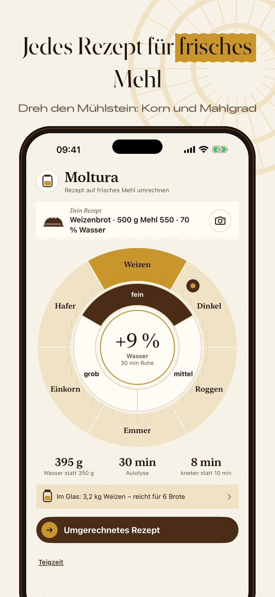
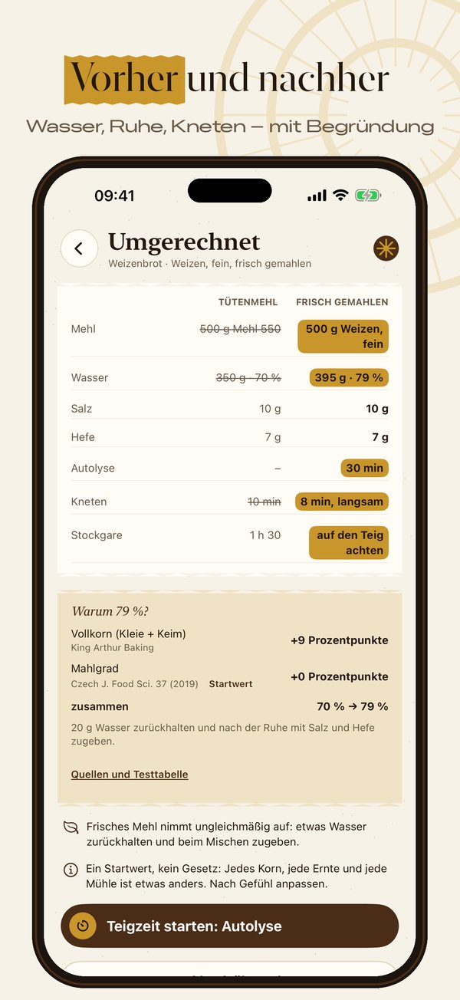
Mühlstein-Umrechner: Korn und Mahlgrad drehen, Wasser und Ruhe sehen
Vorher und nachher nebeneinander, mit Begründung
Eigene Rezepte für frisch gemahlenes Mehl, mit Bäckerprozenten
Kornbibliothek: sechs Getreide und wie sie sich verhalten
Teigzeit mit Schritten und Mitteilung, wenn ein Schritt fertig ist
Vers gemalen volkorenmeel neemt meer water op dan meel uit de zak en heeft tijd nodig om te wellen. Moltura rekent elk recept om voor jouw graan: tarwe, spelt, rogge, emmer, eenkoren of haver, fijn, middel of grof gemalen. Je ziet ervoor en erna naast elkaar – en waarom. Met eigen recepten voor vers gemalen meel, een bakboek en je graanvoorraad.
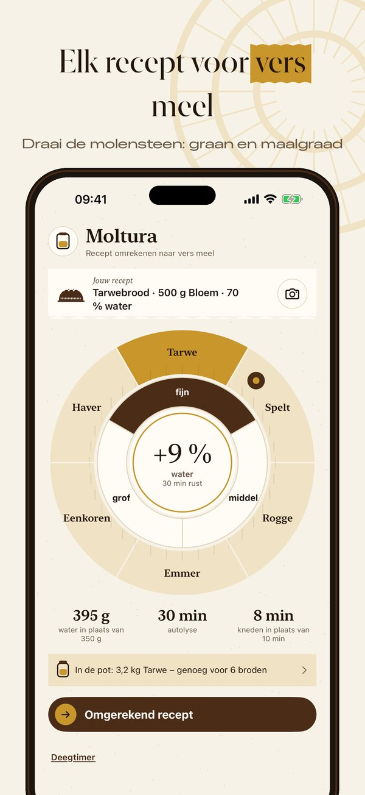
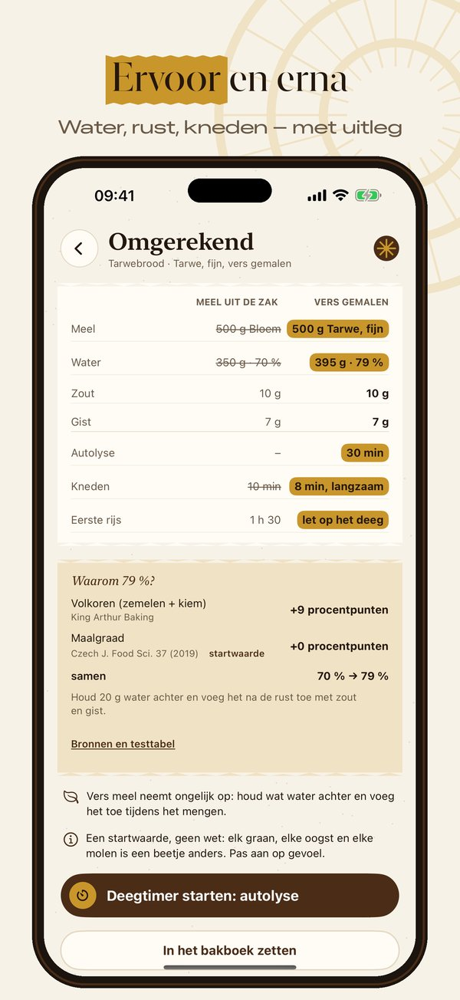
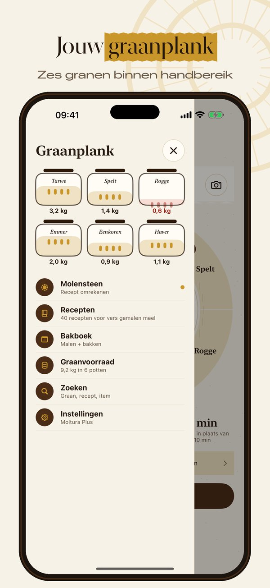
Molensteen-omrekenaar: draai graan en maalgraad, zie water en rust
Ervoor en erna naast elkaar, met uitleg
Eigen recepten voor vers gemalen meel, met bakkerspercentages
Graanbibliotheek: zes granen en hoe ze zich gedragen
Deegtimer met stappen en een melding als een stap klaar is
Bakboek voor maal- en bakdagen met notities
Graanvoorraad in potten: gaat omlaag bij het malen
Nymalet fullkornsmjöl tar upp mer vatten än mjöl från påsen och behöver tid att svälla. Moltura räknar om varje recept för ditt sädesslag: vete, dinkel, råg, emmer, enkorn eller havre, fint, mellan eller grovt malet. Du ser före och efter sida vid sida – och varför. Plus egna recept för nymalet mjöl, en bakbok och ditt sädesförråd.
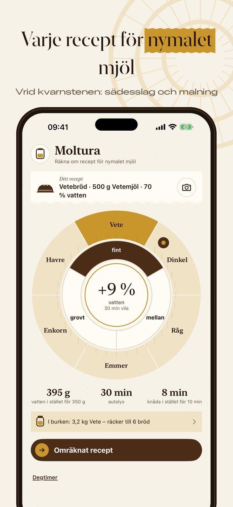
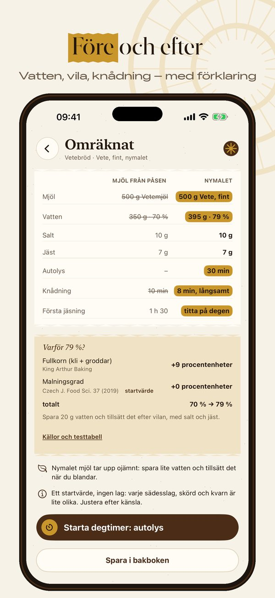
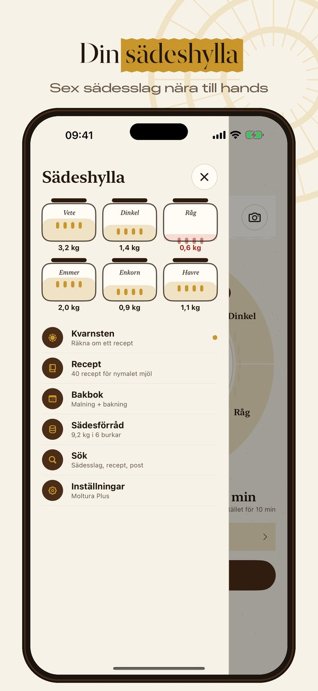
Kvarnstensomräknare: vrid sädesslag och malning, se vatten och vila
Före och efter sida vid sida, med förklaring
Egna recept för nymalet mjöl, med bagarprocent
Sädesbibliotek: sex sädesslag och hur de beter sig
Fresh milled whole grain flour soaks up more water than bagged flour and needs time to hydrate. Moltura converts any recipe for your grain: hard or soft wheat, spelt, rye, emmer, einkorn or oats, fine, medium or coarse. You see before and after side by side – and why. Plus our own recipes written for fresh milled flour, a baking journal and your grain pantry. Grams and °C, or cups and °F.
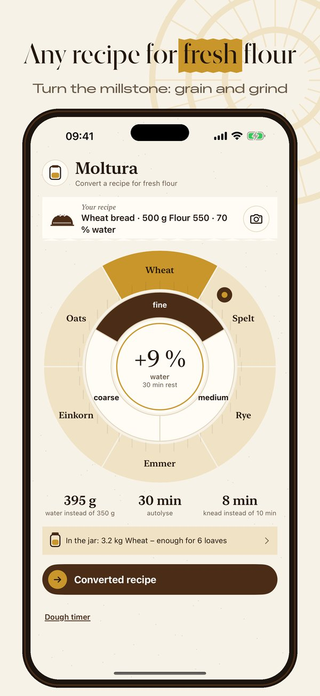
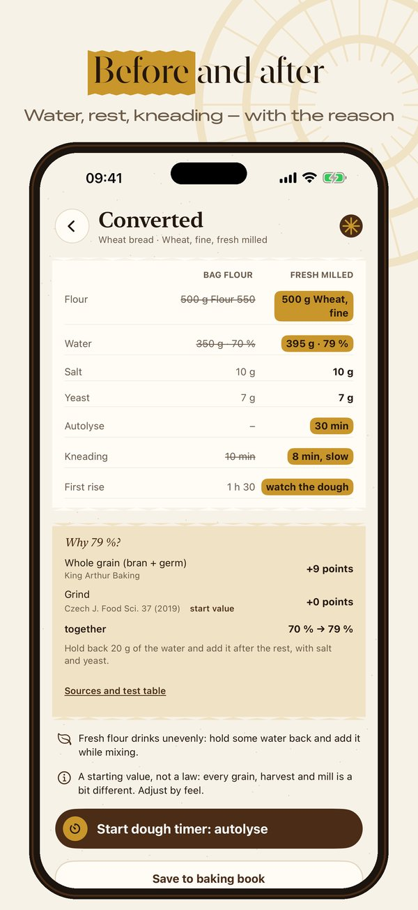
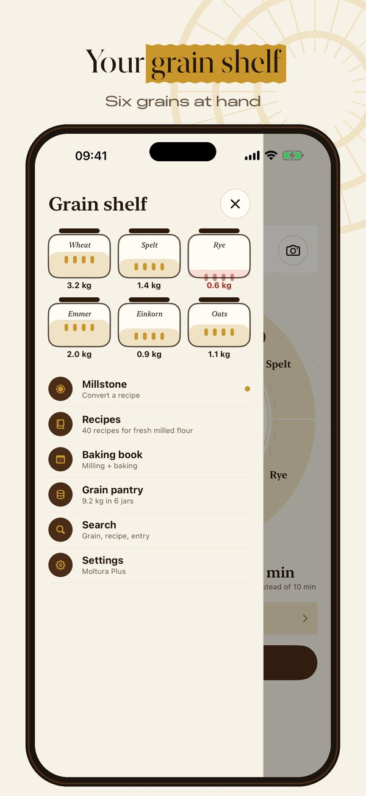
Millstone converter: turn grain and grind, see water and rest
Before and after side by side, with the reason
Our own recipes for fresh milled flour, with baker’s percentages
Grain library: six grains and how they behave
Dough timer with steps and a notification when a step is done
Baking journal for milling and baking days with notes